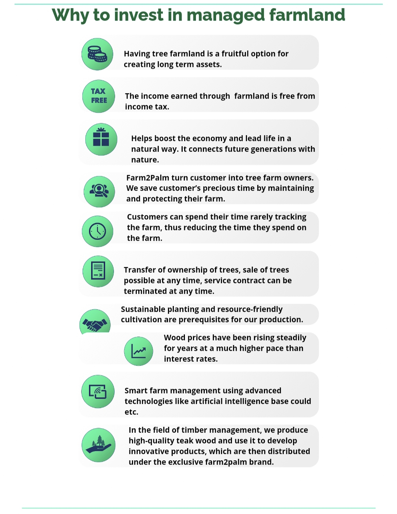
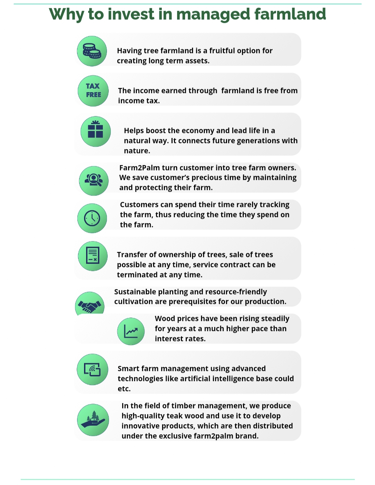

OUR MODO
Enabling farm operations at your fingertips across the globe.
our vision
Smart Farming
At Farm2Palm we combine passion for technology and agriculture with social responsibility and economic returns.
As much as we are focusing on the impact we have on the environment, we do not shy away from higher yields. This dual
approach allows us to develop a green future at the same time making profit on investment. Since we employ advanced
technology-based automation and continual innovation keeps us on the path to a sustainable greener future.
 

OUR SERVICES

Farm2palm teak planning with daily task management to make it simpler to schedule,
so that you can run your operation more smoothly.
Contributing land having sustainable
water and land use for teak farm ,
management including mainstreaming
resilience.

While planting teak tree
we have to,observe this
things like field preparation,
labour management, transplantation,
irrigation feed fertilizer, pest
and weed control and 24/7
security all this thing
will monitor and trade
of farm2palm.
Customer can own their part
of the teak farm and
customers will have
different stage of
lands in that farm2palm
will continue the monitor
that teak farm.
While monitor teak farm
these are the stages like
maintenance process, customer
want to sale their land
means they can sale at
any time and customer want
intercrop means farm2palm
will plant and maintain
that crop also.
can sell and take a
profit from that land,
catch crop profit and
mature teak profit and
land appraisals from
customer earn their own
land profit.

Farm2palm teak planning with daily task management to make it simpler to schedule, so that you
can run your operation more smoothly.